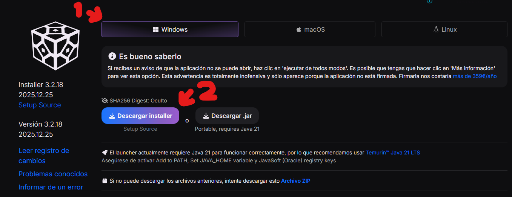
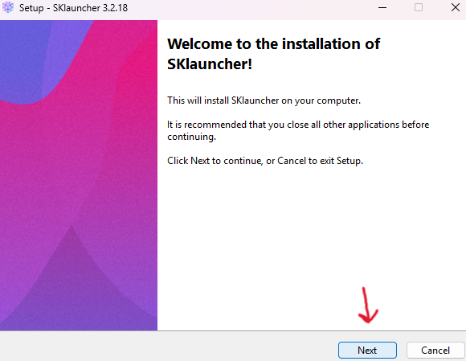
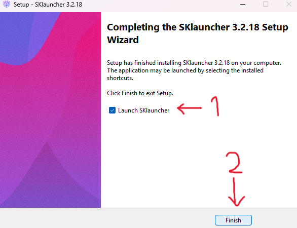
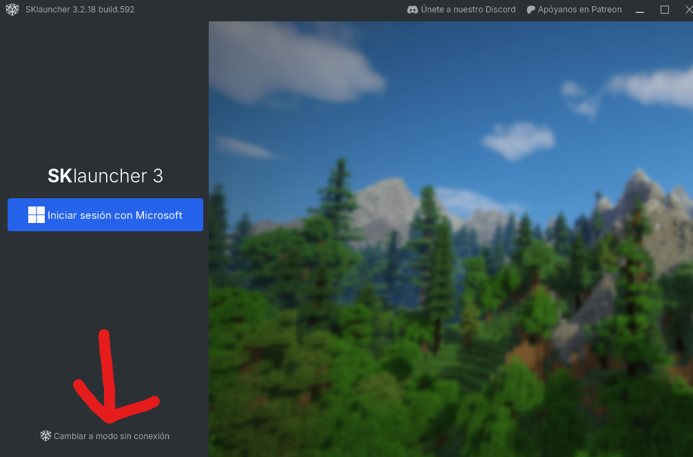
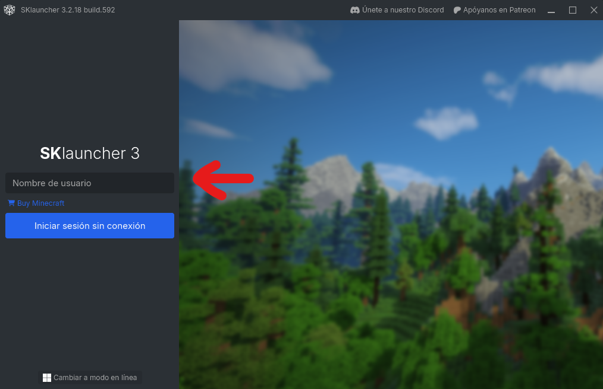
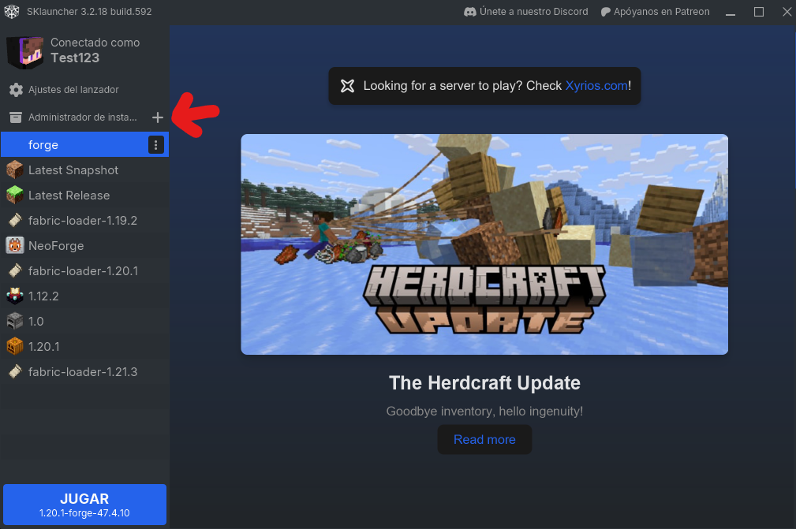
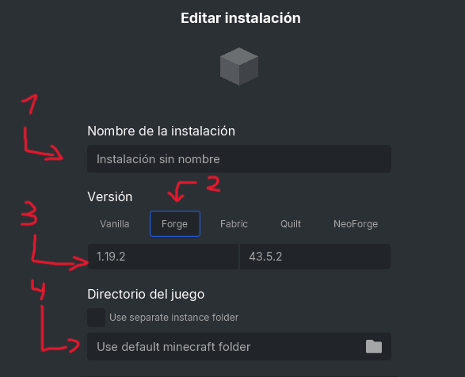

1. Desinstalar TLauncher de vuestro Ordenador para no causar conflictos.
2. (Es imprescindible que si os aparece un anuncio como este en este paso lo cerréis) En este sitio web (1) bajais hacia abajo y seleccionais vuestro sistema operativo y después (2) le dáis click al botón de Descargar installer/.dmg/.jar.

3. (Los de MAC desplazaros aquí.) Una vez descargado el archivo, lo ejecutáis y seguis los pasos del instalador.


4. Una vez finalizado, os aparecerá una ventana como esta, Le tenéis que dar al botón de la flecha.

5. Después de darle al botón, os aparecerá una ventana como esta, donde señala la flecha debéis poner vuestro nombre de usuario que teníais en TLauncher y darle a "Iniciar Sesión sin Conexión".

6. Después de darle a "Iniciar Sesión sin Conexión", os aparecerá una ventana como esta, le tenéis que dar al botón del "+" que señala la flecha.

7. Después de darle al botón del "+", os aparecerá una ventana como esta, donde señala la flecha debéis poner el (1) nombre que queráis para el perfil pero importante elegir (2) Forge, (3) 1.20.1 (Ya se que en la captura aparece 1.19.2 pero me equivoque) y (4) estad seguros de que pone algo como "Use default Minecraft Folder".

8. Después de configurar el perfil, le tenéis que dar al botón de "Guardar" de abajo a la derecha.